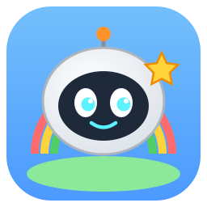

五大主題樂園・30 關
彩虹遊樂場視覺辨識
積木工坊視覺空間關係
小柯果汁吧視覺記憶與順序記憶
海洋搜查隊主題背景區辨
森林躲貓貓視覺完形
特色
- 每種遊戲有簡單、中等、困難三種難度，依年齡建議
- 全程繁體中文語音、動畫遊戲說明、小柯示範
- 眼動評估報告：作答時間、錯誤次數、答對覆蓋率、眼球軌跡（路徑版／注視順序版），可匯出網頁
- 與眼動鼠自動連線；沒有眼動儀也能用滑鼠玩
評估報告僅供家長、老師與治療師參考，不能取代專業評估。

給 3～10 歲孩子的 3D 眼動視知覺遊戲｜搭配「眼動鼠」用眼睛看就能玩
下載 Windows 版 下載 Mac 版 下載眼動鼠評估報告僅供家長、老師與治療師參考，不能取代專業評估。